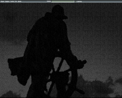

Pantalla de Control
En la zona superior de la Pantalla de Control se encuentra la barra de menú desde la que se accede a distintas funciones de control del ejercicio en ejecución.
| Opciones de la Barra de Menú | Funciones Asociadas |
|
Acceso al Panel de Luces Acceso al Panel de Señales Acceso al Panel de Sonidos Acceso al Panel de Maniobras Acceso al Panel de Comunicaciones Acceso al Panel de GPS Acceso al Panel de RDF Acceso al Panel de Corredera Acceso a la Sonda de Pesca Acceso a la Sonda de Pesca de Red Acceso al Equipo Sonar Control de la Cámara del Visual Control del Escenario Visual Control de la Vista Submarina Control Averías y Capacidades de las Unidades Control de las Comunicaciones entre Unidades Control de Emergencias Control de las Artes de Pesca Presentación de la Conning Display Presentación de la Pantalla de Control de Equipos |
(*) El menú Ver sólo tiene utilidad si el Simulador de Navegación está integrado con el Simulador de Comunicaciones GMDSS.
Durante la preparación del ejercicio, el único menú disponible es el de Ayuda, desde el que se puede acceder a la ayuda "on line" del Simulador, el resto de los menús requieren un ejercicio en ejecución.
Si durante la ejecución del ejercicio el instructor controla una unidad, la Pantalla de Control muestra la Conning Display de la unidad controlada.
| Pantalla de Control del Instructor | Pantalla de Control Mostrando la Conning Display |
|  |  |
Las funciones asociadas a la barra de menú así como las funciones de la Conning Display se describen en detalle en el documento "Conning Display. Manual de Operador".